Plenty of kitchens have every farmhouse feature, shiplap, an apron sink, open shelving, and still feel a little cold.
The features get the style right. What's missing is warmth, and warmth comes from a completely different set of decisions.
This covers what actually makes a farmhouse kitchen feel cozy, not just correctly styled.

1. Where Shelving and Lighting Fit In
Open shelving and a statement light fixture both do more for warmth when they're styled with the same patina, texture, and undertone principles as the rest of the room, rather than treated as separate structural upgrades.
A warm-toned bulb in an otherwise striking fixture actually matters more for coziness than the fixture's design on its own.
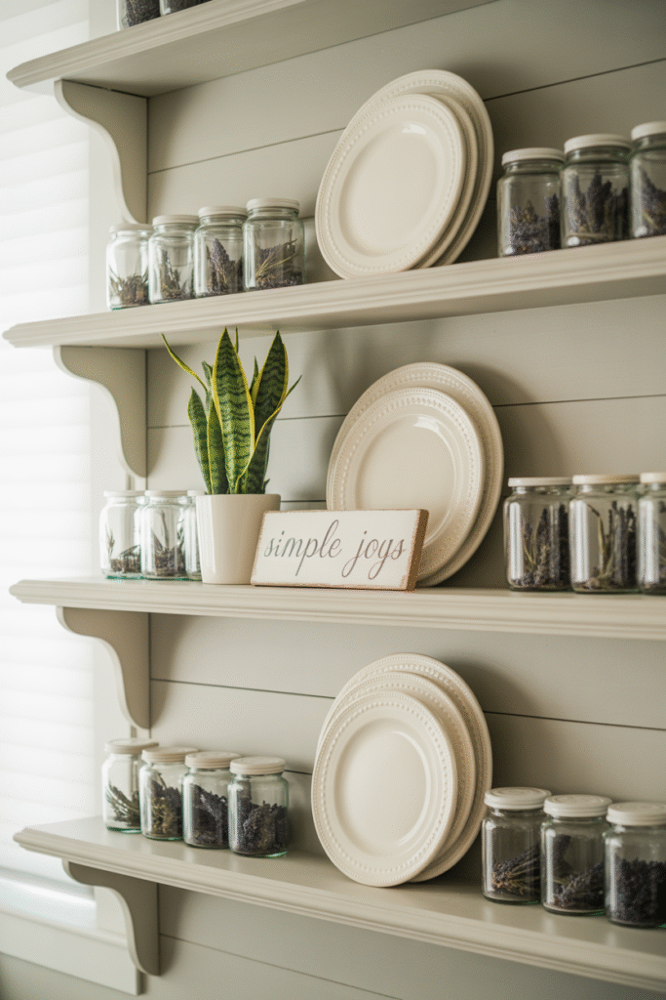
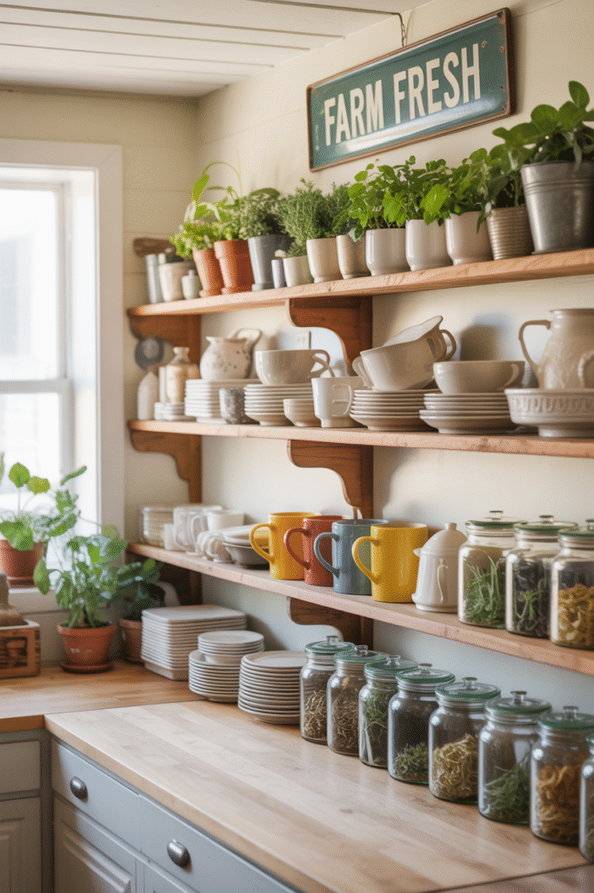
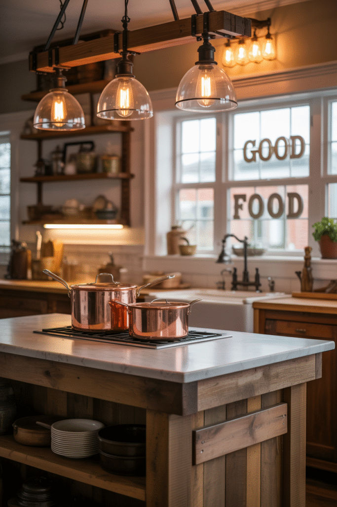
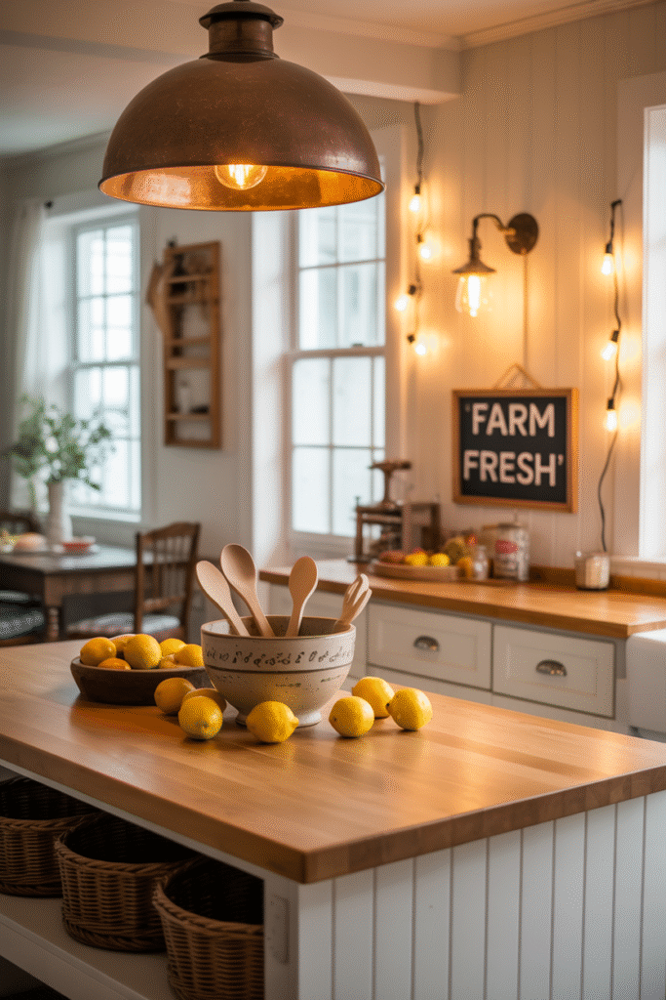
2. Where the Sink and Island Fit In
An apron-front sink and a kitchen island are already well covered elsewhere as standalone farmhouse features. For coziness specifically, what matters is finishing them with the same warm materials and lighting as the rest of the room, rather than letting them read as a separate, colder design choice.
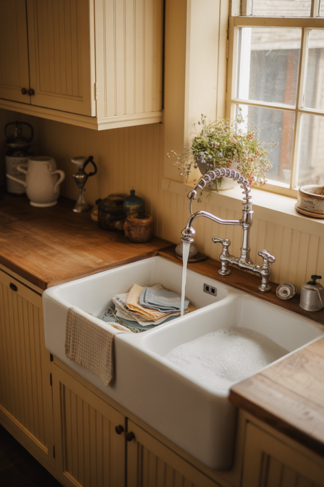
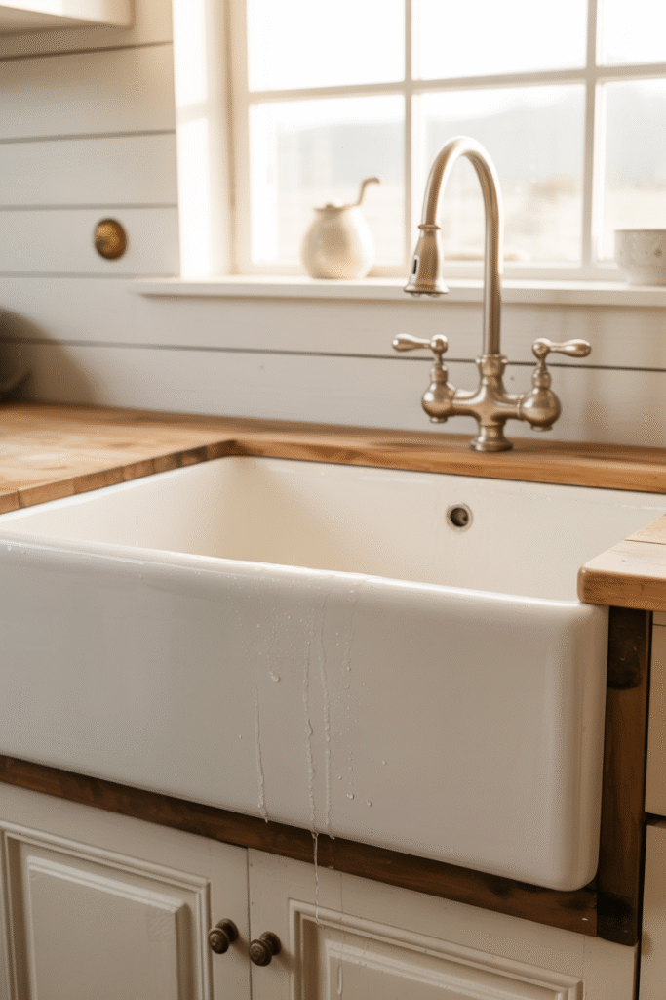
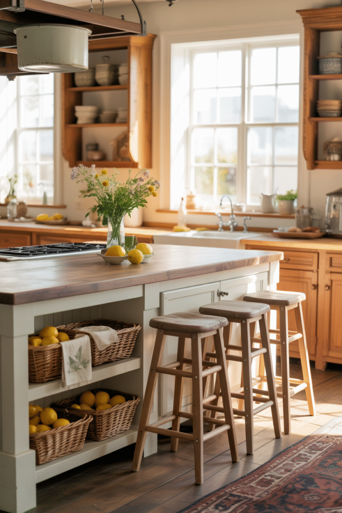
3. Where Natural Wood Fits In
Open shelving in a warm wood tone, or a reclaimed wood accent somewhere in the room, adds a kind of material warmth that painted surfaces alone can't deliver.
This pairs directly with the undertone decision below. A warm wood against a warm-toned base reinforces the same feeling instead of competing against it.
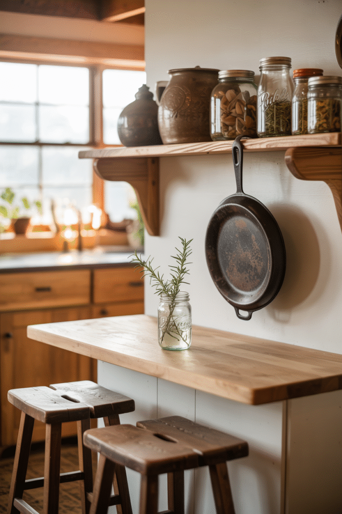

4. Finish With Decor That Looks Actually Used
A crock of wooden spoons by the stove, a bowl of fruit on the counter, herbs on the windowsill, decor that looks like it gets touched daily reads as warmer than anything purely decorative ever could.
This is the detail that makes a kitchen feel lived in rather than staged for a photo.
A slightly imperfect, in-use kitchen beats a flawless, untouched one for genuine coziness every single time.
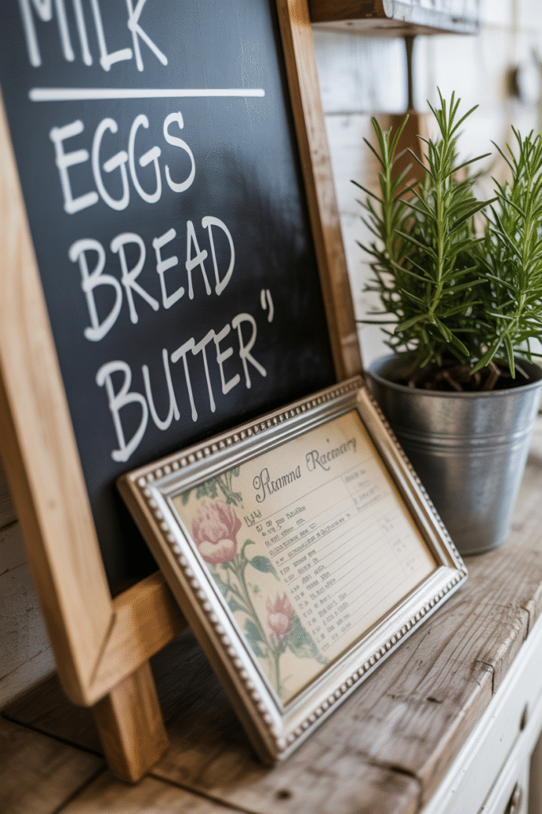
5. Soften Hard Surfaces With Textiles
A woven runner, linen curtains, and a stack of textured towels soften a kitchen's hard surfaces, counters, tile, cabinetry, more than any single decor object could on its own.
This is one of the fastest, cheapest ways to add warmth, and one of the easiest to update with the seasons.
A kitchen with zero soft textiles almost always reads as cooler than one with even a small amount worked in.
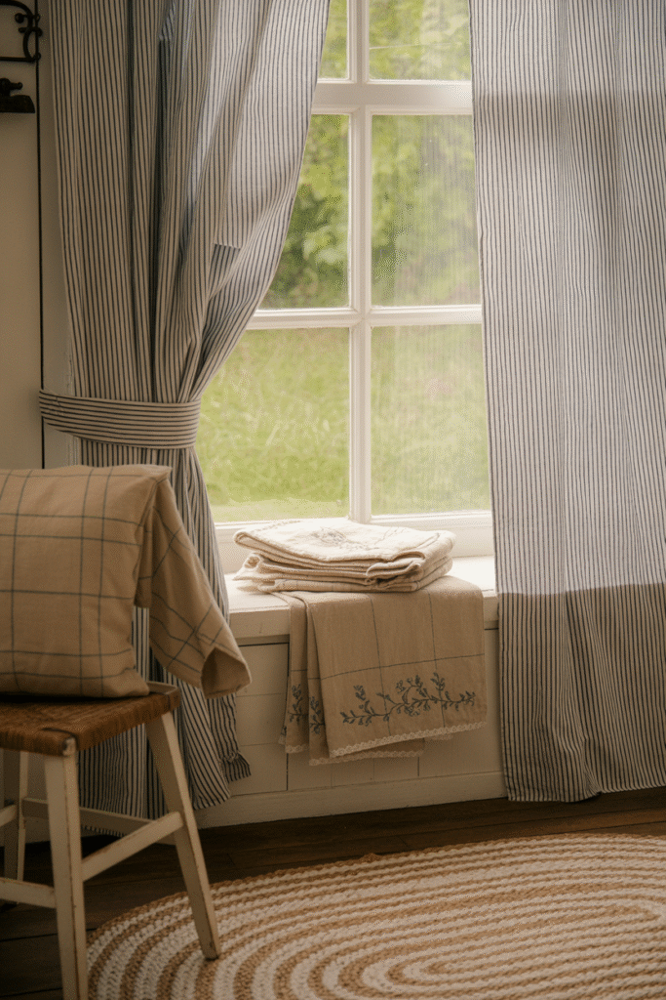
6. Balance Metals Instead of Matching Them
Warm brass or copper alongside black iron hardware brings more depth than one entirely matched metal finish ever would.
The goal is balance, not a free-for-all. One or two metal tones, used consistently throughout the room, read as intentional rather than scattered.
This detail matters more for warmth than most people expect, since cold chrome or stainless on its own can undercut an otherwise warm room.
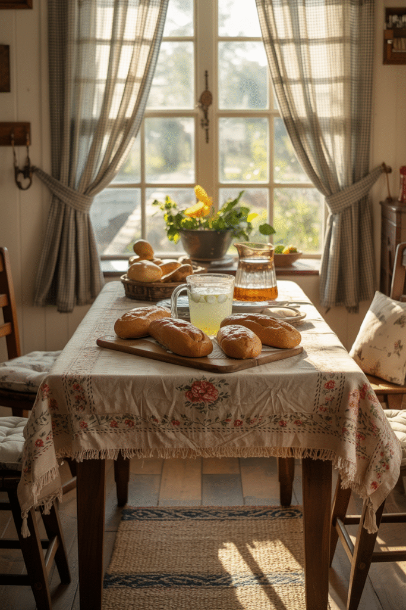
7. Let Vintage Pieces Carry Real Patina
A genuinely old cutting board, a worn enamel pitcher, or a flea-market find with actual wear does more for warmth than a brand-new piece styled to look vintage.
Real age and imperfection are what separate a kitchen that feels collected over time from one that feels purchased in a single trip.
A few true vintage pieces, chosen deliberately, outperform a kitchen full of faux-aged decor every time.

8. Start With a Warm Undertone, Not Just a Color
A white or cream base with a warm undertone reads completely differently than the same color with a cool undertone, even though both technically qualify as "farmhouse white."
This single decision affects how every other color and material in the kitchen reads, which makes it worth testing carefully before committing to anything.
A cool-toned base is the single most common reason a farmhouse kitchen ends up feeling sterile instead of warm.
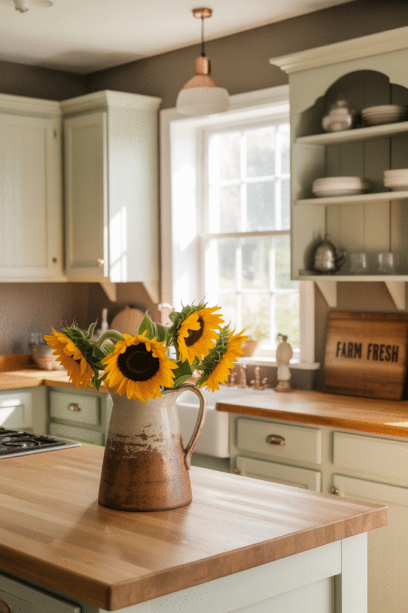
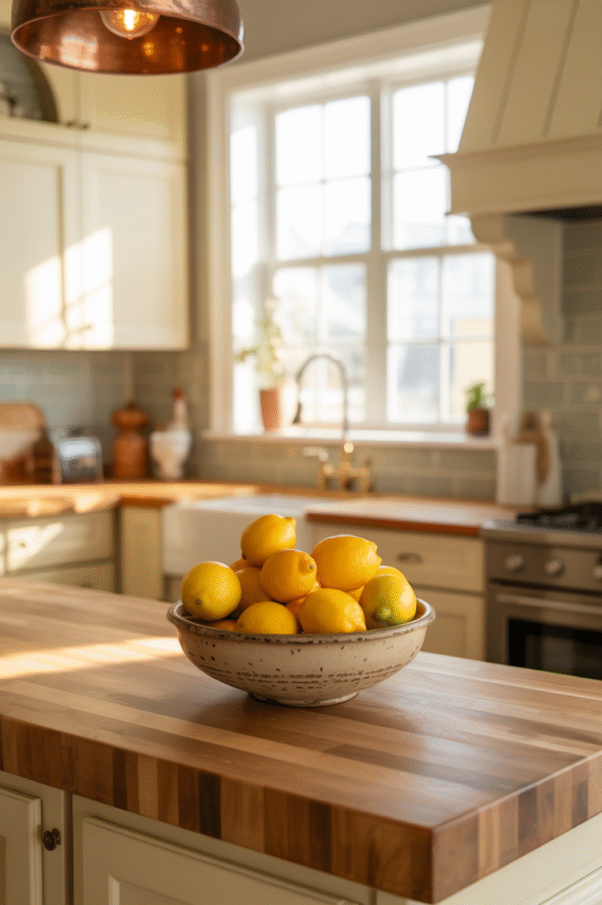
Bring on the Rustic Charm
None of these warmth principles require replacing a single farmhouse feature already sitting in the kitchen.
Starting with the undertone and the textiles makes sense, since both are the fastest to adjust. Genuine vintage pieces and lived-in decor can layer in over time after that.
The features make a kitchen farmhouse. Warmth is what actually makes it cozy.